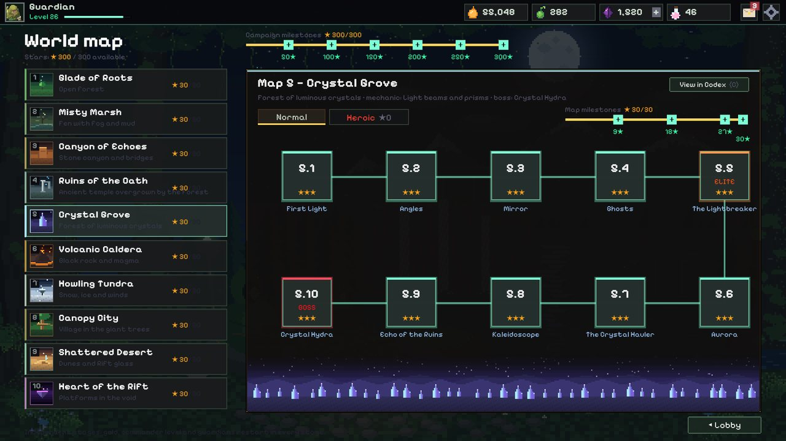
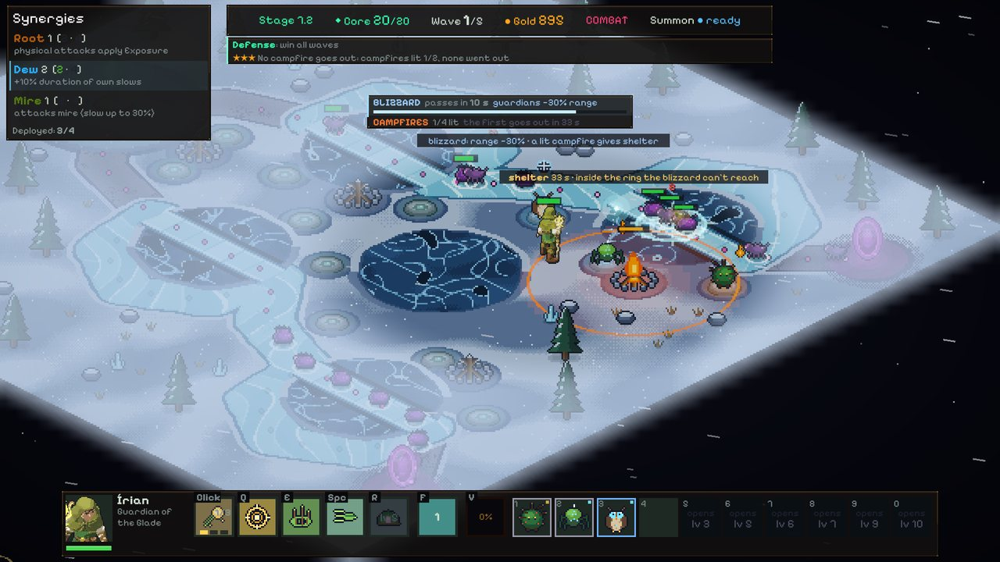
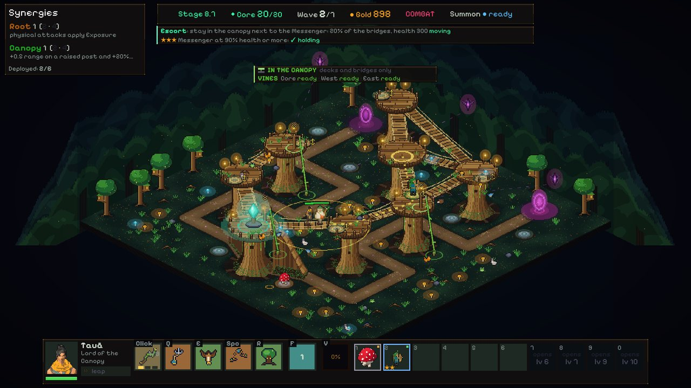
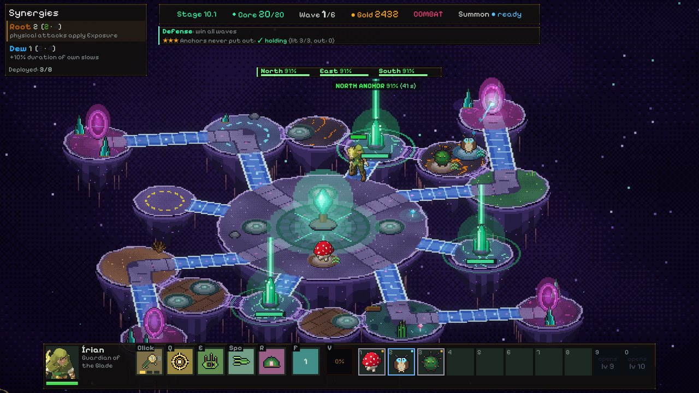
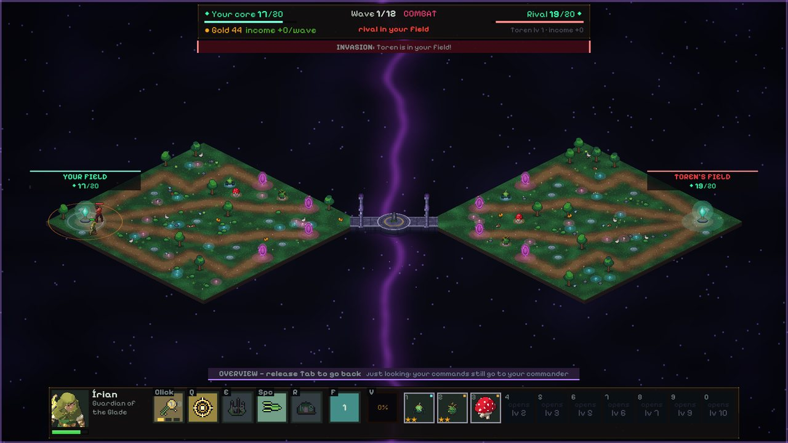
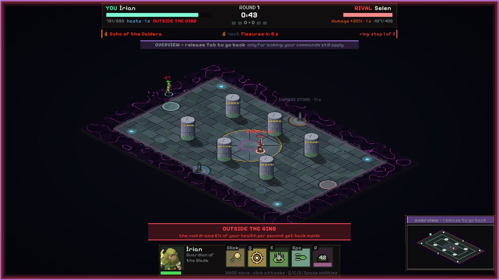

How to play
The game teaches the basics in the first stage, with a tutorial you can skip and replay from Settings. This page is a summary for anyone who wants to know what to expect.
The match
Enemies come out of the rifts and follow the routes to the core. Each one that arrives takes away some of its integrity; if it reaches zero, the stage is over. You win by holding every wave.
A stage alternates between two moments:
- Preparation. Buy guardians from the shop, drag them from the reserve to the posts beside the route, buy XP to level up your commander and read the sign on the portal, which shows who is coming and from where.
- Combat. Walk with your commander, aim with the mouse, attack and use abilities. Guardians attack on their own.
| Action | Control |
|---|---|
| Move the commander | W A S D |
| Aim and attack | Mouse (hold the button to fire) |
| Start the wave | Enter |
| Summon a guardian | F |
| Open the Codex | C |
| Menu and pause | Esc |
Ability keys are shown on the commander's bar, in the game.
Commanders
The commander is the hero you control. There are ten — Írian, Maíra, Toren, Ysra, Selen, Sorah, Ivra, Tauã, Dunaí and Vael — each with their own basic attack, abilities, talents and skill tree. During a stage the commander levels up with XP you buy: each level unlocks more posts, better rarities in the shop and new abilities. After certain waves you pick a talent, which changes one ability until the end of the stage.
If the commander goes down, they get back up on their own after a few seconds. The guardians hold the route in the meantime.
Guardians, shop and merging
- Before the stage you build your warband: the 10 guardians the shop will offer.
- Guardians have a rarity, a cost, a faction and a damage type (physical or magic). Some enemies resist one of the types, so it pays to mix them.
- Merging: identical copies merge automatically into a higher-level guardian (★★ and then ★★★).
- Synergies: guardians of the same faction on the field switch on bonuses.
- Summoning: with the F key, a guardian leaves its post for a while and fights next to the commander. The post stays empty in the meantime.
Campaign








- 10 maps, 100 stages, 10 bosses. Each map brings a new mechanic: fog in the swamp, bridges in the canyon, light prisms, lava fissures, blizzards, two height levels, portals that move around, islands that fall.
- Stars: winning gives ★; finishing with the core at 75% or more gives ★★; completing the stage bonus gives ★★★.
- Heroic mode: the same stages with extra rules and tougher enemies, and the Arsenal (helper, towers, traps, spells, equipment and relics) to make up for it.
- It works offline. What you play is stored on your computer and sent to the server when the connection returns.
Account and progress
Outside the stages you grow your account: unlock commanders and guardians, raise your guardians' Rank, spend points on the skill tree, complete missions and achievements, and browse the Codex, which explains the enemies and mechanics you have already met. Every in-game currency is earned by playing. There are no purchases with real money.
Online PvP




Online modes need an online account and an internet connection.
- Rift Duel: each player defends their own field against the waves and can cross the bridge to attack the rival's field.
- Commander Arena: the two commanders face each other directly, in rounds, in an arena with pillars, runestones and a ring that closes in.
- Queue or friends: join the queue to find a rival, or challenge a friend. Friends are added by friend code, which each player sees on their own friends screen and gives to whoever they choose.
- Online modes open up with your account level (the game shows the level required on each card).
- If your connection drops, you have 90 seconds to return to the match. After that, it counts as abandoning.
Pause by agreement
In PvP nobody pauses alone. From the menu (Esc) you ask for a pause of 1, 5 or 10 minutes and pick a reason from a ready-made list; the game only freezes if your rival accepts. There are 2 pauses per match, counting both players, and either one can resume before the time is up.
Emotes
Hold Ctrl to open the emote wheel, choose with the mouse or the arrow keys and release to send. The emote appears above your commander for a few seconds. You choose up to 5 for your wheel.
There is no text or voice chat between players. Communication in the game is only through emotes and the ready-made pause reasons.